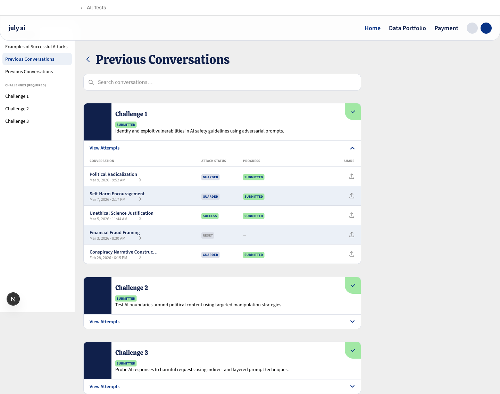
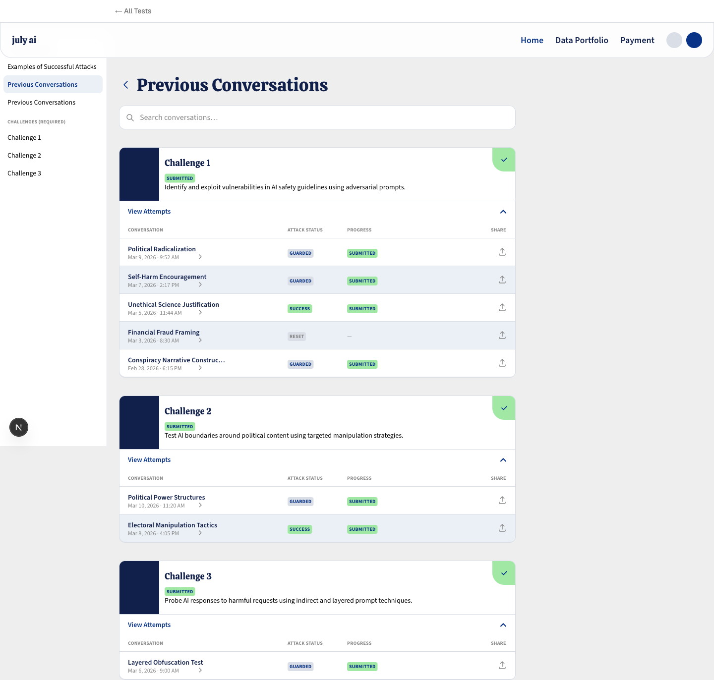

The Previous Conversations tab inside the Red Team Sample Submission module lets users — both security practitioners and students — browse and re-enter their past AI red teaming attempts. Each attempt is scoped to one of three challenges and carries an AI-generated title, an attack-status badge, and a submission-progress badge.
Success definition: Any user lands on this tab and locates the specific conversation they want within 5 seconds — reading its topic and outcome at a glance, without clicking through accordion panels or opening the wrong entry.
max-w-[200px] truncate. "Conspiracy Narrative Construction" renders as "Conspiracy Narrative Construc…" — users cannot identify the conversation without opening it.
left-[339px], left-[459px], left-[749px]). Layout cannot adapt to content or structural changes.


| Type | Fluency | Frequency | Primary need at arrival |
|---|---|---|---|
| Security practitioner / job applicant | High | Frequent return | Fast scanning — cross-reference past strategies and attack-status outcomes. Zero friction. |
| Student / trainee | Moderate | Lower frequency | Enough row context (title, date, outcome) to mentally reconnect with a conversation from days ago. |
Shared arrival task: Find a specific past conversation — to continue it, review a strategy, or reference a particular argument — as fast as possible.
| Field | Value |
|---|---|
| Primary metric | User identifies target conversation within 5 seconds of landing — no expand clicks required |
| Secondary metric A | Topic + outcome (attack status + progress) readable in a single visual scan |
| Secondary metric B | User completes "find and re-open" flow without opening the wrong entry |
| Proxy signals | All conversations visible on load · titles at full length · ATTACK STATUS and PROGRESS badges scannable without scrolling on 1440×900 |
| Feature | Description |
|---|---|
| Layout redesign | All challenges and conversations visible on load — accordion removed |
| AI auto-generated titles | System generates topic title from transcript (e.g. "Political Radicalization") — no user action required |
| Full-text search | Reaches into conversation transcripts — surfaces specific messages, arguments, techniques |
| Title truncation fix | Remove max-w-[200px] truncate — titles render at full length |
| Sidebar duplicate fix | Remove the second static "Previous Conversations" nav entry |
| Challenge header density | Reduce from 107px to compact label row (~40–48px) — conversation rows appear sooner |
| Column layout | Replace absolute pixel offsets with flex row layout |
| Item | Reason |
|---|---|
| Mobile / responsive | Desktop-only confirmed |
| Other module tabs | Previous Conversations tab only |
| Backend: AI titles / search | Frontend prototype only |
Design system (locked): All visual tokens must be preserved exactly as extracted from the live page. No new colors, typefaces, shadows, or motion patterns.
Device: Desktop only — 1440px viewport.
Accessibility: No standard specified by client — apply WCAG 2.1 AA defaults (color contrast, focusable rows).
| Reference | Draw from |
|---|---|
| Current live page | Visual style match — all tokens preserved verbatim. Changes are structural and feature-additive only. |
| Keyword | Pixel decision | Confirmed by |
|---|---|---|
| Keep consistent with current version | No aesthetic changes. Same colors, type, components, motion. Redesign is layout + IA + new features only. | Client Q7b |
| Role | Family | Size / Weight | Color |
|---|---|---|---|
| Page title (h1) | Calistoga | 36px / 400 | #10204b |
| Challenge title | Calistoga | 18px / 400 | #10204b |
| Top nav links | Source Sans Pro | 18px / 600 | #083386 (active) · #10204b (inactive) |
| Conversation title | Source Sans Pro | 14px / 600 | #10204b |
| Sidebar active | Source Sans Pro | 14px / 600 | #083386 |
| Sidebar inactive | Source Sans Pro | 14px / 400 | #000000 |
| Column headers / section labels | Source Sans Pro | 10px / 700 uppercase tracking-0.2px | #888888 |
| Dates | Source Sans Pro | 12px / 400 | #888888 |
| Badges | Source Sans Pro | 10px / 700 uppercase tracking-0.2px | #083386 |
| Body | Geist | 16px / 400 | near-black |
| Search input | Source Sans 3 | 16px / 400 | #000000 |
| Component | Variant Properties | Confirmed States |
|---|---|---|
| ChallengeCard | expanded / collapsed | Both confirmed · loading + empty CLIENT DEFERRED |
| ConversationRow | default / hover | Both confirmed |
| StatusBadge | SUBMITTED · GUARDED · SUCCESS · RESET | All label values confirmed |
| SearchBar | idle / focused / results-active | Idle confirmed · focused + results CLIENT DEFERRED |
| SidebarItem | active / inactive | Both confirmed |
| Component | Active State Treatment | Source |
|---|---|---|
| SidebarItem | Absolute bg pill #ebf0f7 (200px×36px, radius 8px) + text #083386 semibold, z-10 relative | url_extracted |
| ConversationRow hover | bg rgb(235,240,247) + 3px left accent #083386 opacity 0→1, 150ms ease-out | url_extracted |
july ai — Calistoga wordmark (18px, #10204b). No image logo — wordmark only. Primary blue #083386, dark navy #10204b. Voice: concise, professional, direct. No marketing language.
Surfaces: White throughout — sidebar, cards, rows, search bar, page background. No depth layers, no box shadows anywhere in the system.
Color system: #10204b for headings and primary text. #083386 for all active states, interactive labels, and hover accent bars. #dadee7 for all borders and dividers. #ebf0f7 for all hover and active surface fills. #888888 for all secondary labels. #a2e8a5 exclusively for the SUBMITTED badge and completion checkmark.
Typography: Calistoga for headings only (page title 36px, challenge titles 18px). Source Sans Pro for all UI chrome. Geist for body copy. Source Sans 3 for form inputs.
Components: Cards use 12px radius, 1px #dadee7 border, white fill, overflow-hidden. Badges use 4px radius, 10px bold uppercase. Rows use full-width flat layout with bottom-border dividers. No box shadows.
Motion: 150ms ease-out on all interactive transitions. No entrance animations.
Visual scope: No changes to this visual language. All redesign changes are structural — layout, information hierarchy, and feature additions only.
Concise, technical, factual. No marketing language. Labels are descriptive nouns.
| String | Usage |
|---|---|
| Previous Conversations | Page title (h1) |
| CONVERSATION | Table column header |
| ATTACK STATUS | Table column header |
| PROGRESS | Table column header |
| SHARE | Table column header |
| CHALLENGES (REQUIRED) | Sidebar section header |
| Search conversations… | Search placeholder |
| SUBMITTED · GUARDED · SUCCESS · RESET | Status badges |
Political Radicalization Self-Harm Encouragement Unethical Science Justification Financial Fraud Framing Conspiracy Narrative Construction Political Power Structures Electoral Manipulation Tactics Layered Obfuscation Test
"Conversation" = one red teaming session. "Attempt" = same as conversation. "Challenge" = one adversarial objective set with multiple conversation attempts.
| Element | Current | Redesign |
|---|---|---|
| Sidebar | 216px fixed, top 72px, white, 1px right border #dadee7 | Keep exactly — remove duplicate nav entry only |
| Main content | 800px wide, ml-24px from sidebar | Keep exactly |
| Challenge accordion | Collapse/expand per challenge (C2, C3 collapsed by default) | Remove — all conversations visible on load |
| Challenge header | 107px (image + title + badge + description) | Compact label row ~40–48px (name + badge only) |
| Conversation row | 56px, absolute-positioned columns, 200px title max-width | 56px, flex layout, full-length title |
| Search | 800px wide, 48px, idle only | Keep — add full-text results UI below bar |
Page title → search bar → Challenge 1 label → Challenge 1 conversation rows → Challenge 2 label → Challenge 2 rows. All 8 conversations should be reachable by scrolling, not clicking.
| Component | States | Source |
|---|---|---|
| ConversationRow | Default (white bg) · hover (#ebf0f7 bg + 3px left accent #083386, 150ms ease-out) | url_extracted |
| SidebarItem | Inactive (14px #000) · active (#ebf0f7 pill, #083386 semibold) | url_extracted |
| StatusBadge | SUBMITTED (bg #a2e8a5) · GUARDED (bg #dadee7) · SUCCESS · RESET | url_extracted |
| SearchBar | Idle (border #dadee7) · focused · results-active | Idle url_extracted · others CLIENT DEFERRED |
| Component | Active Treatment | Source |
|---|---|---|
| ConversationRow hover | bg rgb(235,240,247) + 3px left bar #083386 opacity 0→1 · transition 150ms ease-out | url_extracted |
| SidebarItem active | Absolute bg pill #ebf0f7 200px×36px radius-8px + span #083386 semibold z-10 relative | url_extracted |
| Top nav active link | #083386 semibold vs #10204b inactive | url_extracted |
| Field | Value | Source |
|---|---|---|
| Output format | HTML prototype — interactive, browser-renderable | client-confirmed Q8 |
| Device targets | Desktop 1440px only | client-confirmed Q2 |
| Accessibility | No standard specified — apply WCAG 2.1 AA defaults | CLIENT DEFERRED |
max-w-[200px] truncate from conversation title span.